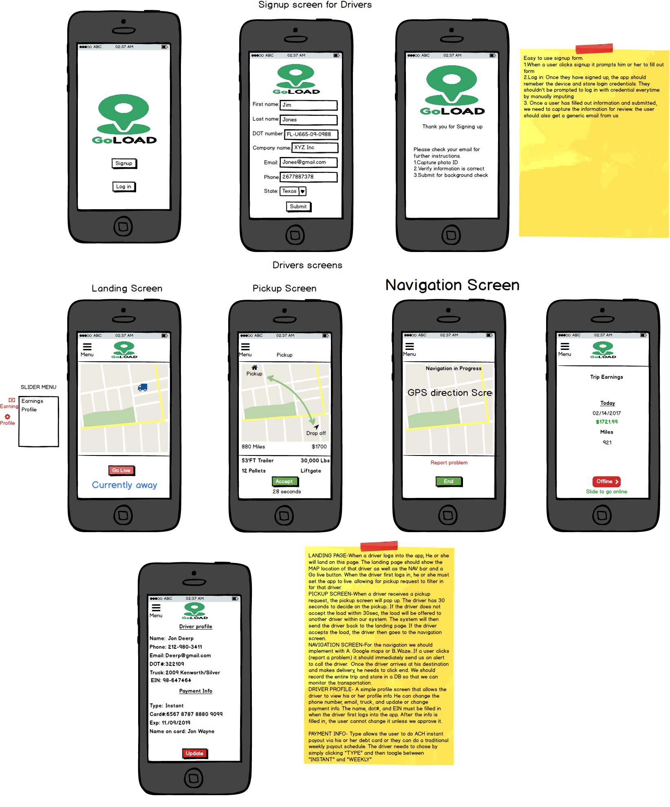
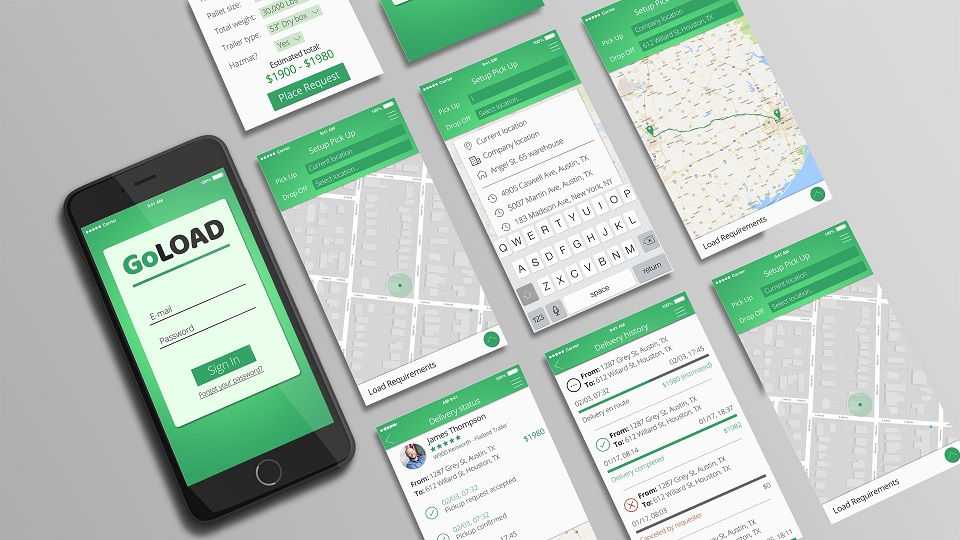
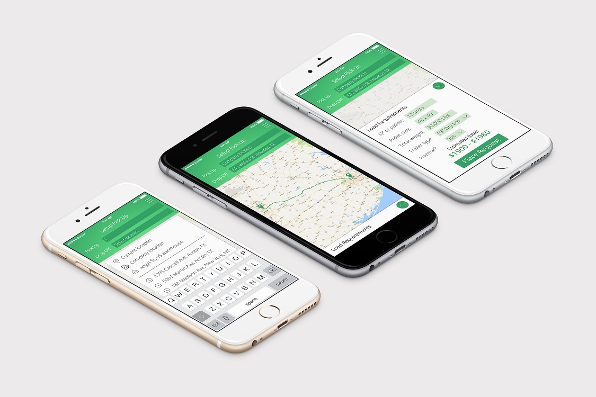
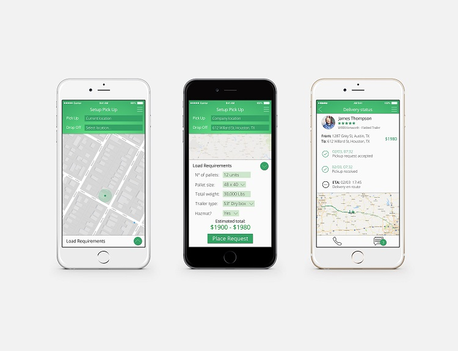

GoLoad is a start-up from Austin, Texas who is seeking to bring the disruptive technology from Uber to a different market, making the live of truck drivers a lot easier.
We started from the idea up from the ground and developed a rustic mockup.

From the mockup, at the same time I developed the logo for it and started working with my partner on this project, Guilherme Morais, on the screens.

After the first screens, we amplified the concept and begun the polishing to the maximum perfectness.


Also producing some mockups to show the real usage of the app into the hands of users.
GoLoad is still in development, as well as our work within it.